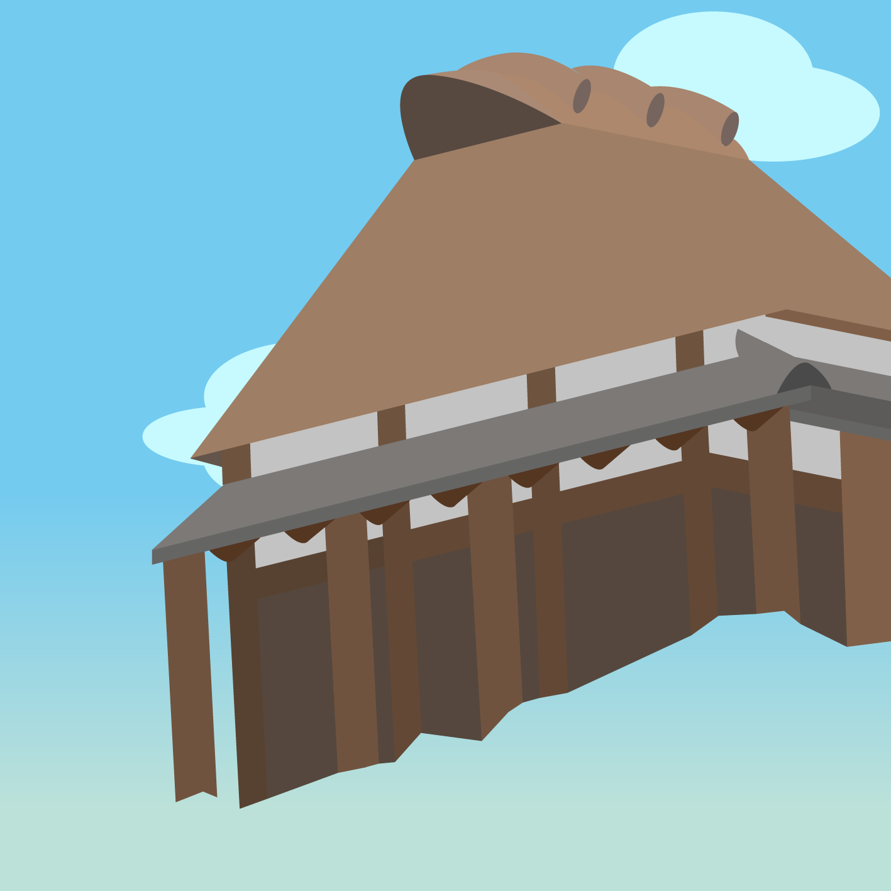
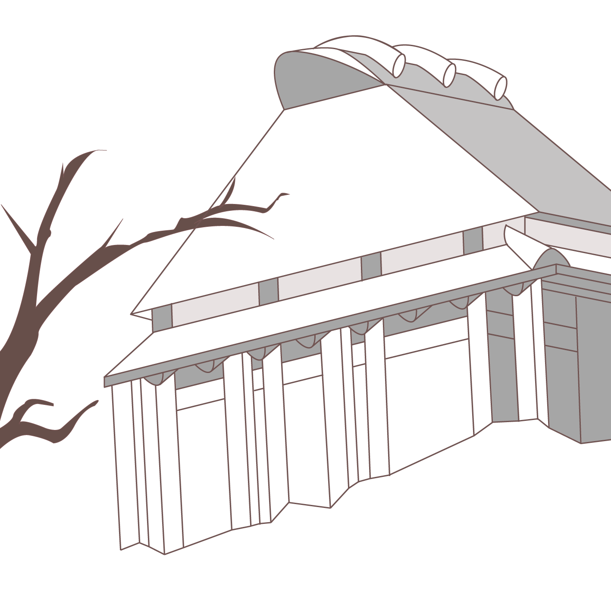
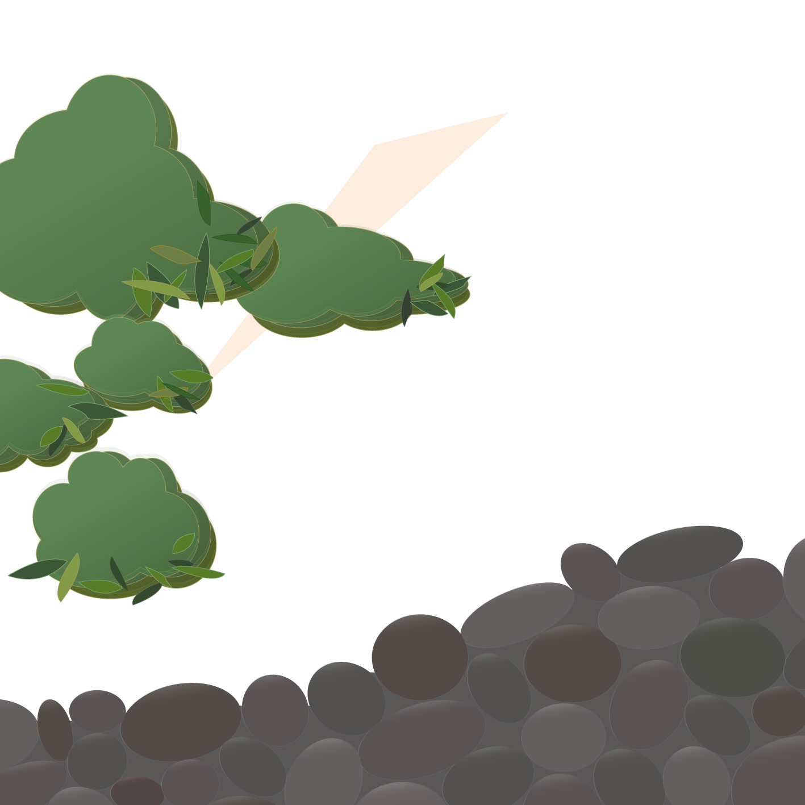
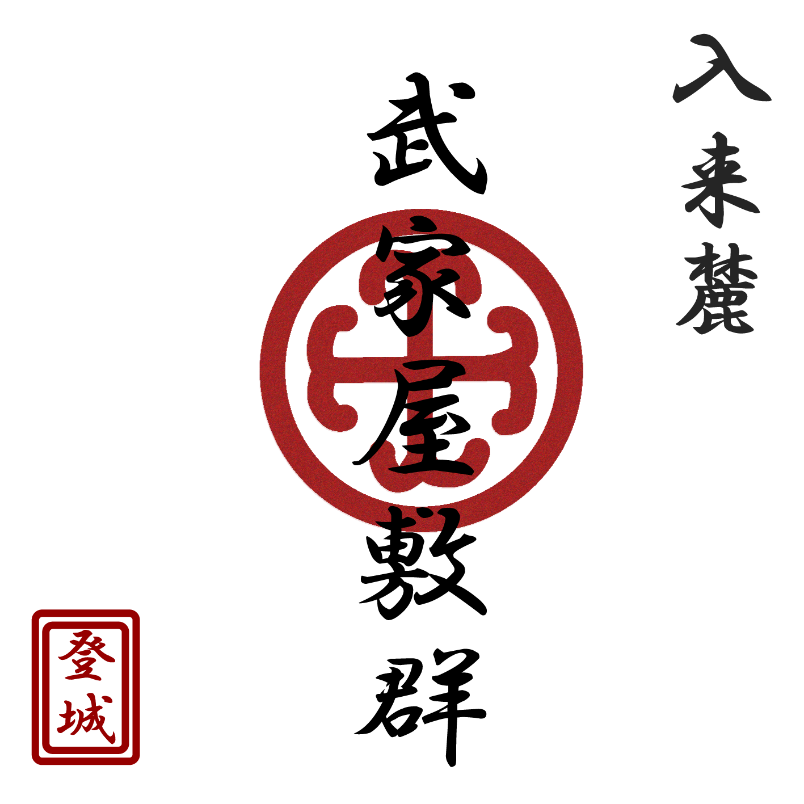
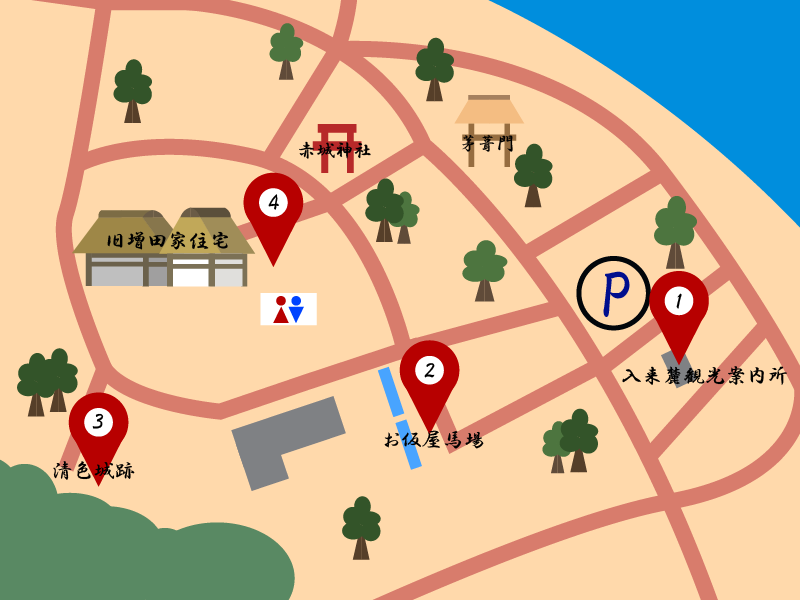

スタンプ獲得数: 0 / 4




🛠️ デベロッパー用テストパネル
〜 重ね押しスタンプラリー 〜




鹿児島県薩摩川内市にある「入来麓」は、江戸時代に薩摩藩が設けた武士たちの集落（外城）の面影を今に伝える歴史的な街並みです。国の「重要伝統的建造物群保存地区」にも選定されています。
近くの川から運び出された丸い石を重ねた「玉石垣」や、防衛のために屈曲させた道路構造など、戦国時代の名残と武士の暮らしの工夫が今も大切に守られています。

「ガイド」や「地図」を参考に、入来麓武家屋敷群にある4箇所のスタンプスポットを訪ねてみましょう。
現地に設置された看板のQRコードを、ホーム画面の「📷 QRコードをスキャン」ボタンから読み取ります。
スタンプを押すごとに版画のように色が重なっていきます。獲得したスポットの「豆知識」もガイド画面で解放されます！
4箇所すべて集めると、あなたの達成順位が入った「イラストを保存」ボタンが出現し、記念画像をダウンロードできます。